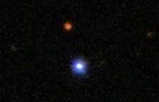
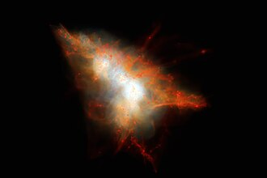

- Twin Quasar (QSO 0957+561)

Mass: 1012 to 1013 solar masses
Distance from Sun: 8.7 Billion Light Years
Location: Constellation Ursa Major
Quasar Red Shift: Z= 1.41
It is a single quasar appearing as two images due to foreground gravitational lens. While Quasar itself is a super massive
black hole, the massive galaxy lensing it (YGKOW G1). The lensing galaxy distance is about 3.7 billion light years and the
image seperation is 6 arcseconds.
The Twin Quasars is a single quasar whose appperance is distorted by the gravity of another galaxy much closer to Earth
along the same line of sight. This gravitational lensing effect is result of the wraping of space-time by the nearby galaxy, as described by
general relaativity.The single quasar thus appears as two seperate image. Both images have an apparent magnitude of 17, with A component
having 16.7 and B component having 16.5. There is 417±3 days time lag between the two images.
The twin Quasar lies at Redshift z=1.41(8.7 billion light years), while the lensing galaxy lies at redshift
z=0.355(3.7 billion light years). The lensing galaxy with apparent dimension of 0.42*0.22 arcminutes lies almost in line
with B image, lying 1 arcsecond off. The quasar lies 10 arccminutes north to NGC 3079.
The lensing galaxy YGKOW G1 is a giant elliptical lying within the cluster of galaxies that also contribute to the lensing
- TON 618(Tonantzintla 618)

TON 618 is an ultramassive, hyper luminous quasar and active galactic nucleus located roughly 10.4 to 18.2 billion light years away, known as one of the largest black hole discoverd.
Mass: 66 Billion Solar Masses (It is more massive than entire Milky Way galaxy)
Luminosity: 140 trillion times that of Sun(One of the most brightest object in universe). Its absolute magnitude of -30.7, radiating with power of 4*1040 waats.
Size: Its Event Horizon(Schwarzchild Radius) is enormous, spanning approx. 1300 astronomical unit(AU) or 195 billion km, streching behind the orbit of pluto.
Location: Found in the direction of the constellations Canes Venatici and Coma Berenices
Observation: First detected in 1957, it was initially mistaken for a blue star.It is a "radio-loud" quasar indicating a massive, energetic jet of material.
Lyman-Alpha Nebula

The nature of TON 618 as a Lyman-Alpha emitter has been well documented since least 1980s. Lyman-alpha emitters are characterized
by thier significant emission of Lyman-alpha line, an ultravoilet wavelength emitted by neutral hydrogen. Such objects, however,
have been very difficult to study due to Lyman-alpha line bieng strongly absorbed by in Earth's atmosphere,limiting study of
Lyman-alpha emitters to those objects with high redshifts. TON 618 with its luminious emission of Lyman-alpha radiation along
with its high redshift, has made it one of the most important objets in the study of Lyman-alpha forest.
Observations made by the Atacama Large Millimeter Array(ALMA) in 2021 revealed the apparent source of the lyman-alpha radiation
of TON 618: an enormous cloud of gas surrounding the quasar and its host galaxy. This would make it a Lyman-alpha blob(LAB), one of
the largest such objects yet known.
- QSR J1819+3845

QSR J1819+3845 is an extremely variable radio-loud quasar(redshift z=0.54) notable of showing rapid, high amplitude flux density variations on timescales of les than an hour. The radio emission is compact, featuring a brightness temperaturs likely exceeding 1013K at %GHz, with brightness temperatures likely exceeding 1014K during peak activity, primarily caused by interstellar scintillation.